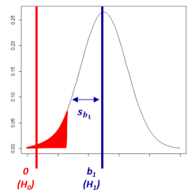

Statistical hypothesis testing
A statistical hypothesis, sometimes called confirmatory data analysis, is a hypothesis that is testable on the basis of observing a process that is modeled via a set of random variables. A statistical hypothesis test is a method of statistical inference. Commonly, two statistical data sets are compared, or a data set obtained by sampling is compared against a synthetic data set from an idealized model. A hypothesis is proposed for the statistical relationship between the two data sets (H1, for instance using linear regression), and this is compared as an alternative to an idealized null hypothesis that proposes no relationship between two data sets (H0). The comparison is deemed statistically significant if the relationship between the data sets leads to highly unlikely results, would the null hypothesis be true.
Hypothesis tests are used in determining what outcomes of a study would lead to a rejection of the null hypothesis for a pre-specified level of significance. The process of distinguishing between the null hypothesis and the alternative hypothesis is aided by identifying two conceptual types of errors (type 1 and type 2), and by specifying a limit on how much type 1 error will be permitted (e.g., 5% of false positive results in psychology).
Student's t-test, and Fisher's F-test, used in linear regression models, are two specific instances of such statistical hypothesis testing approach. The test statistics use to reach a conclusion usually rely on the data, the model and thus the degrees of freedom.

A statistical test procedure is comparable to a criminal trial; a defendant is considered not guilty as long as his or her guilt is not proven. The prosecutor tries to prove the guilt of the defendant. Only when there is enough charging evidence the defendant is convicted.
In the start of the procedure, there are two hypotheses H0: "the defendant is not guilty", and H1: "the defendant is guilty". The first one, H0, is called the null hypothesis, and is for the time being accepted. The second one, H1, is called the alternative hypothesis. It is the alternative hypothesis that one hopes to support. The hypothesis of innocence is only rejected when an error is very unlikely, because one doesn't want to convict an innocent defendant. Such an error is of type 1 (i.e., false positive, the conviction of an innocent person), and the occurrence of this error is controlled to be rare. As a consequence of this asymmetric behaviour, the error of type 2 (false negative, acquitting a person who committed the crime), is often rather large.
The general procedure for statistical hypothesis testing can be summarized as follows:
- Compute from the observations the observed value tobs of the test statistic T.
- Calculate the p-value. This is the probability, under the null hypothesis, of sampling a test statistic at least as extreme as that which was observed.
- Reject the null hypothesis, in favor of the alternative hypothesis, if and only if the p-value is less than the significance level (the selected probability) threshold.
- Fisher's null hypothesis testing
- Decide of the null hypothesis H0, against which to test H1.
- Report the exact level of significance (p-value) instead of using a conventional level (e.g. 5%). Hypotheses are neither accepted nor rejected, and in absence of strong evidence, any decision should be suspended until further data is available.
- Use this procedure only if little is known about the problem at hand, and only to draw provisional conclusions in the context of an attempt to understand the experimental situation.
- Neyman-Pearson decision theory
- Decide of two hypotheses to compare (H0 and H1), but also the type 1 error rate (e.g. 5%), type 2 error rate, as well as sample size (number of observations). All this should be done before the experiment, and determine a rejection region for each hypothesis.
- If the data falls into the rejection region of H1, accept H0; otherwise accept H1. Note that accepting a hypothesis does not mean that you believe in it, but only that you act as if it were true.
- The usefulness of the procedure is limited among others to situations where you have a disjunction of hypotheses, and where you can make meaningful cost-benefit trade-offs for choosing type 1 and 2 error rates (e.g. taking into account the difficulty to find participants).
Confirmatory data analysis (thus statistical hypothesis testing) can be contrasted with exploratory data analysis, which may not have pre-specified hypotheses, and just attempts to extract patterns from data.
An alternative framework for statistical hypothesis testing is to specify a set of statistical models, one for each candidate hypothesis, and then use model selection techniques to choose the most appropriate model. The most common selection techniques are based on either Akaike information criterion or Bayes factor.
The numerous criticisms of significance testing do not lead to a single alternative. A unifying position of critics is that statistics should not lead to a conclusion or a decision but to a probability or to an estimated value with a confidence interval rather than to an accept-reject decision regarding a particular hypothesis. It is unlikely that the controversy surrounding significance testing will be resolved in the near future. Its supposed flaws and unpopularity do not eliminate the need for an objective and transparent means of reaching conclusions regarding studies that produce statistical results. Critics have not unified around an alternative. Other forms of reporting confidence or uncertainty could probably grow in popularity. One strong critic of significance testing suggested a list of reporting alternatives: effect sizes for importance, prediction intervals for confidence, replications and extensions for replicability, meta-analyses for generality. None of these suggested alternatives produces a conclusion/decision.
Advocates of a Bayesian approach sometimes claim that the goal of a researcher is most often to objectively assess the probability that a hypothesis is true based on the data they have collected. Neither Fisher's significance testing, nor Neyman-Pearson hypothesis testing can provide this information, and do not claim to. The probability a hypothesis is true can only be derived from use of Bayes' Theorem, which was unsatisfactory to both the Fisher and Neyman-Pearson camps due to the explicit use of subjectivity in the form of the prior probability. Fisher's strategy is to sidestep this with the p-value (an objective index based on the data alone) followed by inductive inference, while Neyman-Pearson devised their approach of inductive behaviour.